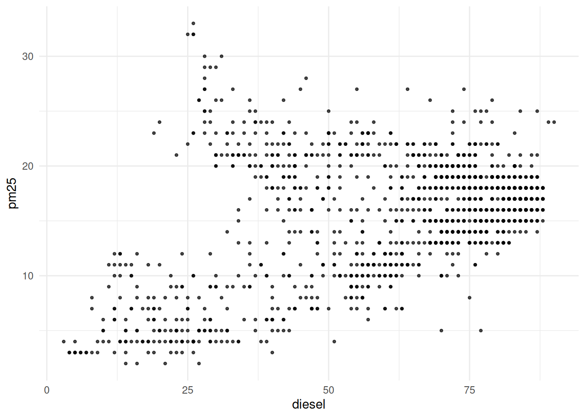
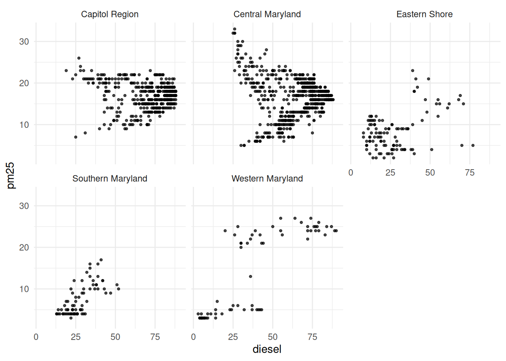
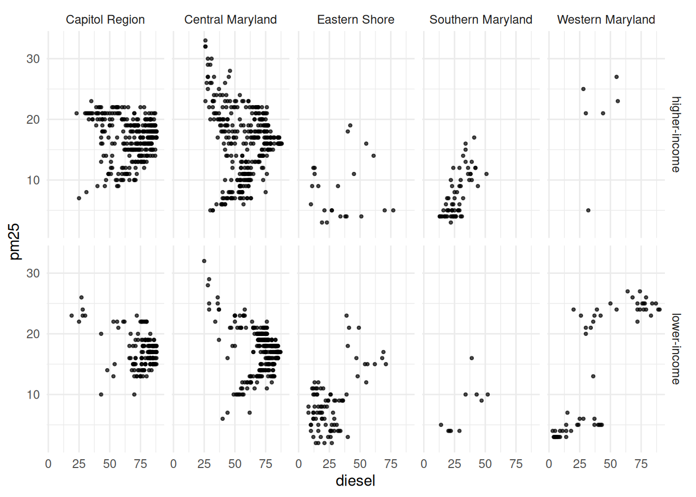
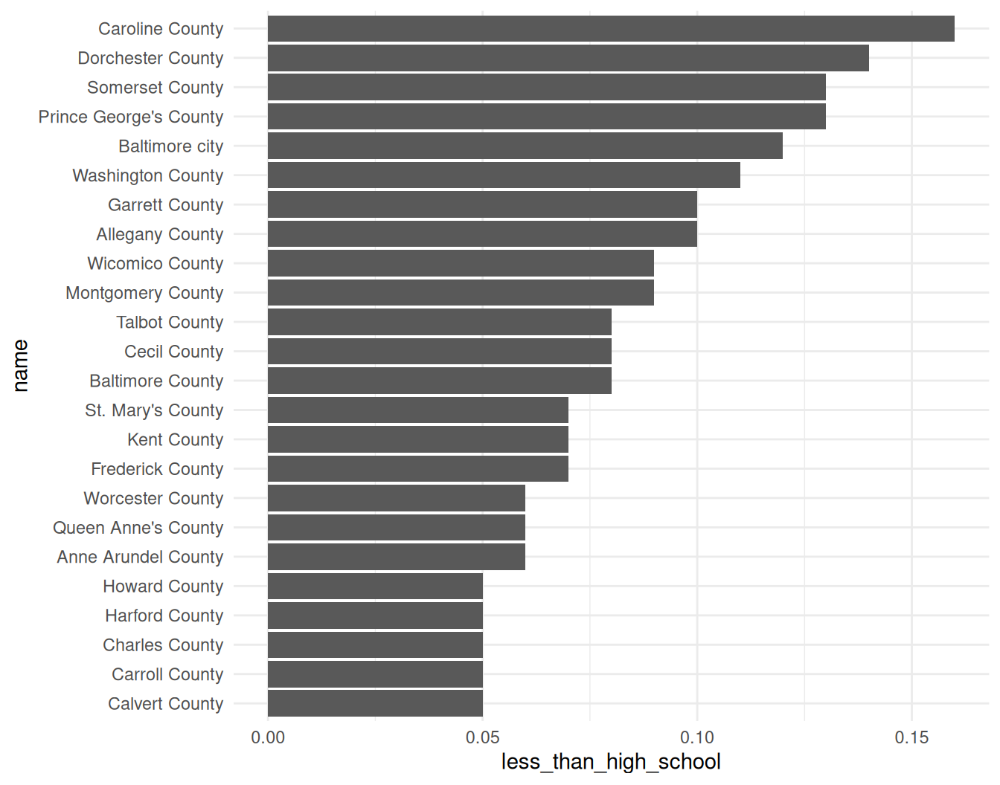
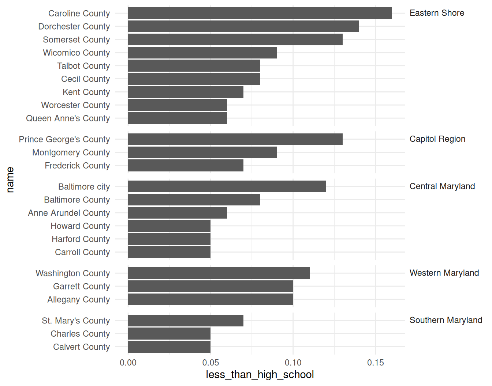
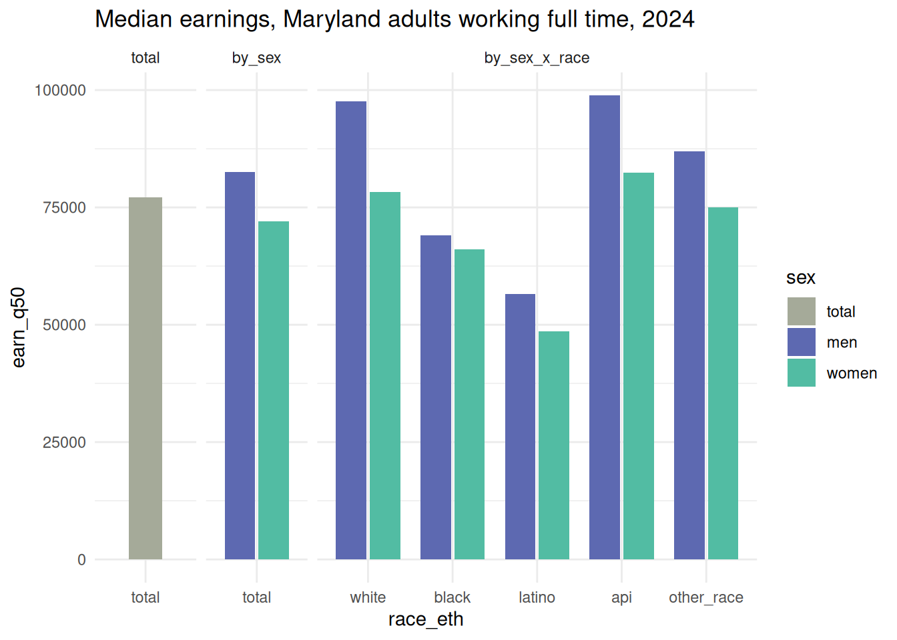
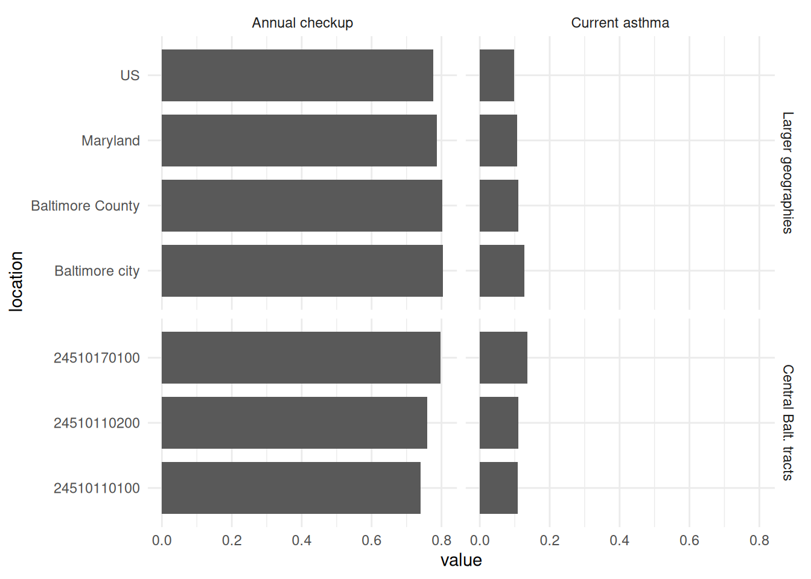

15. Helping readers explore
Exploration in static visualization
In an interactive visualization or dashboard, users are able to decide, at least to some extent, how to chop up and summarize the data shown. It can be good to give users freedom to look at what they’re interested in, but it can also be overwhelming. Think of how often you, with a fair amount of education and experience in working with data, spin your wheels trying to figure out how to get started with a dataset or what to ask. Instead, many readers will be able to get more out of a visualization if you lead them through a story. That means you also have a good amount of sway over what readers understand—don’t mislead them!
In an online dashboard, users would probably be clicking through each of these indicators and/or geographic levels. In static viz, you’re essentially doing that for them, mimicking the process of selecting different views and bringing your expertise to the experience. In my experience, doing static visualization is harder than doing interactive visualization for storytelling because of all the constraints you’re working with.
Some terms
Schwabish (2021) has a great overview of static vs interactive visualizations, explanatory vs exploratory visualizations, and the quadrants these two axes create. Think of these as spectra, where your projects might have elements of many types. He describes these axes:
The first is a vertical line that defines the general FORM of the visualization. This line runs from static to interactive.
- Static visualizations provide all the information at once and do not move. These are, for example, your basic line, bar, and pie charts.
- Interactive visualizations allow a transfer of information between the user and the interface. The user clicks, swipes, or hovers, and something happens or additional information is made visible.
On the horizontal spectrum is the FUNCTION of the visualization. Here, visuals run from explanatory to exploratory visualizations.
- Explanatory visualizations bring the results to the forefront; they convey the author’s hypothesis or argument to the reader.
- Exploratory visualizations encourage the user to explore the data or subject matter to uncover findings for themselves.
Small multiples
Small multiples refer to a technique of breaking data down into subsets, then repeating the same chart type for each subset. In ggplot, these panels are called facets (older libraries and books will refer to trellis plots, which is what I first learned). As always, there’s a good, brief Datawrapper post (Muth, 2024).
Say, for example, I had a scatterplot based on census tracts, but felt it was too crowded; I also want to see if there are differences or similarities in any of the patterns by region of the state. Instead of cramming everything into one scatterplot and dealing with overplotting as we’ve done, plus trying to use color or some other encoding to show region, I could split it into a grid of scatterplots, one per region.
ggplot uses two facetting functions, facet_wrap and facet_grid.
- Wrapped facets are broken up in one direction, usually by just one variable (although you can use multiple variables and nest them). You chop up your chart up into panels, then just wrap them into a grid.
- Gridded facets can be broken up in two directions (or just one, see later on). They are less flexible in that you’ll assign variables to just break up plots by row or by column. They also have more options for changing the scale and size.
I added the dataset md_regions to version 0.3.0 of the justviz package, so you’ll need to upgrade if you don’t see it.
In this example, I’ll use small multiples to get different views of the EJSCREEN data without having to squeeze too much into a frame at once. Here’s a weird pattern between percentile rankings of concentrations of diesel particulate matter and small inhalable particulate matter (PM 2.5):
| tract | pm25 | ozone | diesel | toxic_air_release | traffic | lead_paint_exposure | superfund | risk_mgmt | haz_waste | underground_storage | wastewater | no2 | drinking_water |
|---|---|---|---|---|---|---|---|---|---|---|---|---|---|
| 24001000100 | 7 | 11 | 15 | 44 | 13 | 61 | 57 | 32 | 14 | 20 | 79 | 3 | 0 |
| 24001000200 | 6 | 12 | 28 | 94 | 19 | 66 | 87 | 73 | 26 | 27 | 67 | 9 | NA |
| 24001000500 | 6 | 13 | 37 | 71 | 45 | 84 | 77 | 61 | 27 | 66 | 47 | 30 | 0 |
| 24001000600 | 5 | 13 | 37 | 78 | 37 | 90 | 86 | 73 | 33 | 57 | 50 | 26 | 0 |
| 24001000700 | 5 | 13 | 40 | 78 | 35 | 87 | 84 | 83 | 43 | 71 | 52 | 34 | 0 |
| 24001000800 | 5 | 14 | 41 | 75 | 37 | 93 | 81 | 85 | 62 | 67 | 58 | 37 | 0 |

Small multiples by region will show whether this pattern holds throughout the state. I’ll use the ACS data’s counties, plus the table of regions, to break this up:
# tract fips & county name from acs
ej_region <- justviz::acs |>
dplyr::select(county, name, ages65plus, median_hh_income) |>
# inner join to keep just observations in both data frames
# in this case that means tracts
dplyr::inner_join(justviz::md_regions, by = "county") |>
dplyr::inner_join(ej_wide, by = c("name" = "tract"))
ggplot(ej_region, aes(x = diesel, y = pm25)) +
geom_point(size = 0.8, alpha = 0.7) +
facet_wrap(vars(region))
Now we can see that pattern is even weirder based on region of the state!
Other things to note:
- The regions are just in alphabetical order. You’ll probably need to figure out a logical or data-based order that serves your purposes best. You can use factor variables and
forcatsfunctions to do this pretty easily, maybe in order of average rankings. - Unless the panels are clearly showing different things, it’s generally best to keep the scales the same.
facet_wrapandfacet_gridhave arguments for this, but by default both use the same scales across all panels.
I could do the same sort of thing with a second variable using facet_grid. Let’s add in an income component, where we break tracts into whether their median household income is above $100k, and facet by that as well as region:

I honestly don’t know what’s going on here!
Other applications
You can also use similar techniques and functions not for making multiples of the same chart, but just for adding some separation between parts of a chart. I do this most often when I have some set of observations that give an overview (like state & county averages), then my focus areas with demographic or other breakdowns.
Here’s an example with county-level shares of adults without a high school diploma, again broken down by region. The facetting just makes it a little easier to read, kind of like adding extra line breaks to a very long paragraph.
First without facets:
md_counties <- justviz::acs |>
dplyr::filter(level == "county") |>
dplyr::left_join(justviz::md_regions, by = c("name" = "county")) |>
# order counties by value
dplyr::mutate(
name = forcats::as_factor(name) |>
forcats::fct_reorder(less_than_high_school)
) |>
# also order regions by max value
dplyr::mutate(
region = forcats::as_factor(region) |>
forcats::fct_reorder(
less_than_high_school,
.fun = max,
.desc = TRUE
)
)
no_diploma_gg <- ggplot(md_counties, aes(x = less_than_high_school, y = name)) +
geom_col()
no_diploma_gg
Then add rows for region:
Ewww. facet_grid expects the scales to be the same across panels, and that’s often the case. But in this case, each county is only in 1 region, and therefore should only appear in one panel. Set the scales to "free_y", which means the y-axis scale is allowed to change between panels.
In this version, each panel gets a fixed amount of space regardless of how many bars they have. Change it again to have free spacing, which lets the size of the panels adjust to fit the number of markings on the axis:
Last thing I’d change is the panel labels: the text shouldn’t be rotated like this (it’s also cut off). That can be changed with a theme setting—facet text elements, for the sake of theming, are called strips FYI.

Definitely needs more clean-up, but that’s the structure to get started.
Bottom line: Look through the docs for the facetting functions—there are a lot of arguments, and some of them are confusing and hard to keep track of.
Many views of a dataset
My favorite types of projects are ones where I get to dig deep into one dataset and pull together many different views and perspectives of it. Even better when doing that lets us challenge notions we have in the data.
One way you can chop up data into different views is to start large (state-level values before zooming into towns, total population values before disaggregating by demographic groups, etc). Then you can use higher-level data to provide context for the group you want to focus on. We can again use facets, but this time use them to visually distinguish between our focus data and its comparison.
justviz::wages |>
dplyr::filter(
status == "full_time",
edu == "total",
(sex != "total" | race_eth == "total")
) |>
# dplyr::mutate(
# dimension = forcats::fct_collapse(
# dimension,
# "by_sex" = c("total", "by_sex")
# )
# ) |>
ggplot(aes(x = race_eth, y = earn_q50, fill = sex)) +
geom_col(width = 0.8, position = position_dodge2(preserve = "single")) +
scale_fill_manual(values = qual_pal[c(12, 2, 3)]) +
facet_grid(cols = vars(dimension), scales = "free_x", space = "free") +
labs(title = "Median earnings, Maryland adults working full time, 2024")
My real focus in this chart is the interaction between race and sex, but with 2 types of comparisons to frame it. The code I commented out would combine the first two smaller panels (total & by sex) into one; I don’t think either approach is better than the other.
Here’s a similar approach with hierarchical geographies, as well as showing multiple related values. Say you’re working with the health department or a local hospital to do outreach around preventive care in Central Baltimore. Your focus is on the tracts in that area (this is from the city’s official planning areas), but it’s also helpful to know how they compare to the city and its surroundings, as well as the state and country.
central_balt <- planning_areas |> dplyr::filter(area == "Central")
central_balt_cdc <- justviz::cdc |>
dplyr::filter(indicator %in% c("Current asthma", "Annual checkup")) |>
# get us, state, city, county, central tracts
dplyr::filter(
level %in%
c("us", "state") |
location %in% c("Baltimore city", "Baltimore County", central_balt$geoid)
) |>
dplyr::mutate(value = value / 100) |>
dplyr::mutate(
indicator = forcats::as_factor(indicator) |>
forcats::fct_relevel("Annual checkup")
) |>
dplyr::mutate(
level2 = forcats::fct_recode(level, "Central Balt. tracts" = "tract") |>
forcats::fct_other(
keep = "Central Balt. tracts",
other_level = "Larger geographies"
) |>
forcats::fct_relevel("Larger geographies")
)
ggplot(central_balt_cdc, aes(x = value, y = location)) +
geom_col(width = 0.8) +
facet_grid(
rows = vars(level2),
cols = vars(indicator),
scales = "free_y",
space = "free_y"
)
One thing to notice about a chart like this: the horizontal scales are very different, and that’s to be expected. Most adults have a doctor’s checkup each year, but most adults don’t have asthma. If these were two indicators you did expect to have similar ranges of values, using the same scale helps show how they differ. Doing this with annual checkup and annual dental visit, for example, would let you know whether one type of preventive care lags behind the other. Even without knowing a lot about this data, you can do a sanity check and realize that they occur on different scales. In that case, I’ll generally use free scales for the x-axis as well.